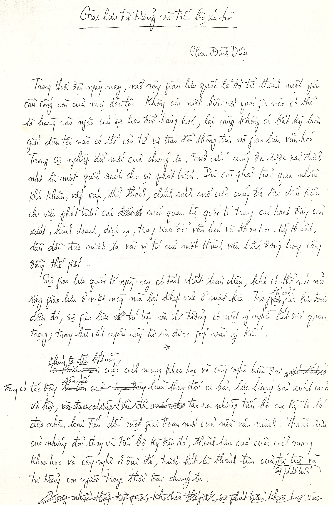

Nhân thấy Phan Dương Hiệu tập hợp những bài viết của bố – GS Phan Đình Diệu – mình tìm lại những bài viết của anh Diệu gửi Hiệu. Vừa rồi về Hà Nội, vợ chồng mình tới thăm anh Diệu chị Hương cùng anh Đinh Dũng. Thật cảm động sau nhiều năm được gặp lại anh, người anh, người thày đã góp phần dìu dắt mình trưởng thành.
Thăm anh Diệu ở Hà Nội, tháng 7 năm 2001.
Xin giới thiệu một bài viết của anh từ những năm 1980.

Giao lưu tư tưởng và tiến bộ xã hội
Phan Đinh Diệu
Trong thời đại ngày nay, mở rộng giao lưu quốc tế đã trở thành một yêu cầu sống còn của mọi dân tộc. Không còn một biên giới nào có thể là hàng rào ngăn cản sự trao đổi hàng hóa, lại càng không có bất kỳ biên giới dân tộc nào có thể cản trở sự trao đổi thông tin và giao lưu văn hóa.
Trong sự nghiệp đổi mới của chúng ta, “mở cửa” cũng đã được xác định như là một quốc sách cho sự phát triển. Dù còn phải trải qua nhiều khó khăn, vấp váp, thử thách, chính sách mở cửa cũng đã tạo điều kiện cho việc phát triển các mối quan hệ quốc tế trong các hoạt động sản xuất, kinh doanh, dịch vụ, trong trao đổi văn hóa và khoa học – kỹ thuật, dần dần đưa nước ta vào vị trí của một thành viên bình đẳng trong cộng đồng thế giới.
Sự giao lưu quốc tế ngày nay có tính chất toàn diện, khó có thể nói mở rộng giao lưu ở mặt này mà lại khép cửa ở mặt kia. Trong bối cảnh giao lưu toàn diện đó, sự giao lưu trí tuệ và tư tưởng có một ý nghĩa hết sức quan trọng; trong bài viết ngắn này tôi xin được góp vài ý kiến.
Chúng ta đều biết rằng, cuộc cách mạng khoa học và công nghệ hiện đại đang có tác động sâu sắc làm thay đổi cơ bản lực lượng sản xuất của xã hội, tạo ra những tiến bộ cực kỳ to lớn đưa nhân loại tiến đến một giai đoạn mới của nền văn minh. Thành tựu của cuộc cách mạng khoa học và công nghệ vĩ đại đó, trước hết là thành tựu của sự phát triển trí tuệ và tư tưởng con người trong thời đại chúng ta.
Trong những thập kỷ khởi đầu của cuộc cách mạng khoa học và công nghệ hiện đại, khi nhiều dân tộc trên thế giới ganh đua nhau trên con đường tiến đến một nền văn minh mới, thì do những hoàn cảnh khắc nghiệt của các cuộc chiến tranh giải phóng dân tộc liên tiếp, chúng ta không có điều kiện gia nhập vào dòng văn minh của thời đại, mọi sự giao lưu về trí tuệ và tư tưởng đều bị hạn chế, chúng ta gần như sống trong một ốc đảo cô lập bên ngoài dòng chảy sôi động của trí tuệ loài người. Đấn lúc đã có những điều kiện thuận lợi hơn cho việc mở rộng quan hệ với thế giới bên ngoài, thì do những thành kiến nhất định, chúng ta có thể chấp nhận một sự trao đổi và học tập rộng rãi đối với các lĩnh vực khoa học tự nhiên và khoa học kỹ thuật, nhưng vẫn dị ứng khá mạnh với việc tiếp nhận và trao đổi rộng rãi đối với các thành tựu về khoa học kinh tế, khoa học xã hội và sự phát triển tư tưởng nói chung. Tất nhiên, cũng cần nói thêm một yếu tố quan trọng nữa là do không được đầu tư đáng kể, nên ta không có đủ nguồn thông tin, tư liệu về các tiến bộ khoa học và kỹ thuật trên thế giới, điều đó cũng hạn chế nhiều kết quả của sự giao lưu trí tuệ.
Học thuyết duy vật biện chứng dạy chúng ta rằng thế giới khách quan là sự tồn tại và vận động của vật chất, từ sự vận động ở trình độ thấp như các vận động có tính cơ giới của các vật thể vô cơ, đến sự vận động ở các trình độ cao như trong sự sống của sinh vật, trong tổ chức xã hội của loài người, trong các hoạt động tư duy, tâm lý của con người. Sự tồn tại và vận động của vật chất được biểu hiện qua các sự kiện, các hiện tượng cụ thể; tuy nhiên, con người, trong quá trình nhận thức thế giới khách quan, “không bao giờ có thể nhận thức được cái cụ thể một cách hoàn toàn. Một tổng số vô hạn những khái niệm chung, những qui luật, etc. đem lại cái cụ thể trong tính toàn thể của nó” 1). Như vậy, cho dù cái đích nhận thức của chúng ta là các sự kiện, các hiện tượng cụ thể trong tự nhiên và xã hội, nhưng con đường đi đến nhận thức cái cụ thể đó thì lại rất khúc khuỷu, phải thông qua các khái niệm chung, các qui luật, tức là thông qua tư duy trừu tượng. “Từ trực quan sinh động đến tư duy trừu tượng, và từ tư duy trừu tượng đến thực tiễn – đó là con đường biện chứng của sự nhận thức chân lý, của sự nhận thức thực tại khách quan” 2). Cái cụ thể của thực tại chỉ có thể được nhận thức bằng các qui luật phổ biến thông qua tư duy lý luận, Mặt khác, qui luật bao giờ cũng chỉ là “cái phản ánh yên tĩnh của thế giới” (Hê-ghen), và do “qui luật nắm lấy cái gì là yên tĩnh, nên chính vì vậy mà qui luật, mọi qui luật, đều là chật hẹp, là không đầy đủ, là gần đúng” 3). Vậy là, ta không có cách nào để nhận thức được cái cụ thể của thế giới khác hơn là thông qua các qui luật rút ra từ tư duy lý luận; nhưng mọi qui luật trừu tượng, trong khi hướng tới cái bản chất của vận động, bao giờ cũng chỉ phản ánh được một mặt nào đó của sự vận động, cũng chỉ là cái phản ánh yên tĩnh, phiến diện, không đầy đủ của vận động. Chính vì vậy mà một qui luật, một số qui luật bao giờ cũng chỉ cho ta khả năng đạt được chân lý tương đối – phải có vô hạn các qui luật mới có thể “đem lại cái cụ thể trong tính toàn thể của nó”, mà “vô hạn …” thì không bao giờ nhận thức con người có thể đạt tới. Tuy nhiên, khoa học càng phát hiện nhiều qui luật phổ biến từ nhiều mặt khác nhau, thì chân lý tương đối mà nhận thức của chúng ta đạt được càng gần hơn tới chân lý tuyệt đối.
Nhắc lại một số luận điểm cơ bản đó của nhận thức luận duy vật biện chứng để xác định được đúng đắn vị trí quan trọng của những cống hiến to lớn mà trí tuệ loài người đạt được trong thời đại chúng ta vào việc hoàn thiện nhận thức của con người đối với tự nhiên và xã hội. Sẽ là phản biện chứng nếu ta đóng cửa trước mọi dòng trí tuệ và tư tưởng của thời đại, khư khư xem là tuyệt đối cái mà trí tuệ loài người đã đạt được ở một thời, trong một điều kiện nhất định nào đó của quá khứ. Và cũng là phản biện chứng, nếu ta thừa nhận sự vĩ đại của những thành tựu khoa học tự nhiên và khoa học kỹ thuật, đòng thời lại phủ nhận giá trị của những cống hiến mới về triết học, xã hội học, kinh tế học, v.v… đang được phát triển rất phong phú và đa dạng trong thời đại ngày nay.
Chính là theo sơ đồ nói trên của học thuyết duy vật biện chứng vạch ra cho quá trình nhận thức, mà ta hiểu sâu sắc rằng khoa học càng phát triển thì càng có xu thế “nhất thể hóa”, bởi vì mỗi ngành khoa học riêng biệt nghiên cứu các qui luật phổ biến về một mặt nào đó – trừu tượng và phiến diện – của vận động vật chất, để rồi cuối cùng phối hợp lại nhiều loại qui luật đó từ nhiều ngành khoa học khác nhau để nhận thức được càng ngày càng đúng đắn các hiện tượng phức tạp của thực tiễn, sự “nhất thể hóa” được thực hiện ở cái đích cuối cùng của nhận thức, tức là ở sự nhận thức cái cụ thể phong phú của tự nhiên và xã hội.
Khoa học hiện đại đã đạt được nhiều kết quả rất sâu sắc cả về nghiên cứu cơ bản – tức nghiên cứu các qui luật phổ biến về từng hình thái đã được trừu tượng hóa của vận động vật chất, cả về nghiên cứu vận dụng các qui luật đó trong việc nhận thức thế giới khách quan, đặc biệt trong những lĩnh vực rất phức tạp như sự sống, kinh tế và xã hội. Sự phát triển của xã hội, và sự phát triển của nhận thức chúng ta về xã hội đã làm cho nhiều nhà trí thức cũ, rất sâu sắc của một thời, đã bị thời đại vượt qua.
Ta lấy một vài thí dụ. Ngày nay ta nói nhiều về cách mạng “tin học hóa” với sự thâm nhập rộng rãi của máy tính điện tử trong mọi lĩnh vực họat động. Nhưng có lẽ ta chưa đánh giá hết những cống hiến mà khoa học về thông tin đóng góp vào việc làm giàu nhận thức của chúng ta. Chính là với khoa học này ta hiểu được vai trò của hình thái vận động thông tin – tức hình thái chuyển hóa tính trật tự và tổ chức – trong vận động vật chất, hiểu được các qui luật của sự vận động đó, và vận dụng chúng để làm sâu sắc thêm nhận thức của chúng ta về tự nhiên và xã hội. Với khoa học thông tin chúng ta hiểu rõ hơn bản chất của các họat động điều khiển, tổ chức và quản lý, từ đó có thể bổ sung và hoàn thiện, thậm chí có thể đổi mới nhiều luận điểm cơ bản trong các học thuyết cổ điển về kinh tế và xã hội. Ta nhớ rằng vào thời của Mác, các hệ thống sản xuất chưa đến nỗi phức tạp, thông tin chưa đóng vai trò quan trọng trong các hệ thống đó, nên sự phân tích giá trị và giá trị thặng dư theo các công thức C = c + v + m là thỏa đáng, nhưng rõ ràng trong nền sản xuất hiện đại, khi trình độ tự động hóa được nâng cao và vai trò của họat động tổ chức và quản lý – tức của sự vận động thông tin – càng ngày càng có ý nghĩa quyết định, thì hoặc phải thay đổi ý nghĩa của các yếu tố v, m, hoặc phải phân tích giá trị theo những công thức phức tạp hơn.
Mác, Ăng-ghen, và cả Lê-nin đều cho rằng, sau khi xóa bỏ quan hệ sản xuất tư bản chủ nghĩa, có thể thiết lập một hình thái kinh tế với một hình thức sở hữu công cộng, với một chế độ quản lý tập trung theo một kế họach toàn bộ, thậm chí, như Lê-nin đã có lần viết: “Toàn thể xã hội sẽ chỉ còn là một phòng làm việc, một xưởng máy, với chế độ lao động ngang nhau thì lĩnh lương ngang nhau”. Khoa học thông tin hiện đại, với các lý thuyết về độ phức tạp và với nguyên lý về sự đa dạng, cho ta biết rằng một hình thái kinh tế được quản lý tập trung một cách kế họach hóa như vậy là không thể có được. Một hình thái kinh tế – xã hội tiến bộ hơn và thay thế cho hình thái tư bản chủ nghĩa phải phức tạp và phong phú hơn nhiều so với dự kiến của các nhà sáng lập chủ nghĩa xã hội khoa học.
Khoa học hệ thống hiện đại – mà một trong những người sáng lập đích thực của nó là Bodanov, trong sinh thời đã không được Lê-nin hiểu đúng và bị phê phán một cách bất công trong “Chủ nghĩa duy vật và chủ nghĩa kinh nghiệm phê phán” – cũng là một nguồn tri thức phong phú cung cấp nhiều phương pháp tư duy mới đối với việc nhận thức các vấn đề phức tạp của kinh tế, xã hội, đặc biệt là các vấn đề quan hệ giữa các mối tương tác và việc phân tách hệ thống, các kiểu kiến trúc hệ thống và việc phân cấp hệ thống, các hình thức hiệp tác trong điều khiển hệ thống với nhiều cấp mục tiêu lợi ích khác nhau, quan hệ giữa tập trung và phi tập trung trong quản lý, v.v… Chẳng hạn, việc phân tách thế giới thành nhiều khối có thể là hợp lý trong những điều kiện nhất định của các mối tương tác; nhưng trong một thế giới mà các tương tác rất phong phú và đa dạng, thì việc tách thành hai khối đối lập sẽ trở thành phản khoa học. Cách tiếp cận hệ thống đã có ảnh hưởng quan trọng đến việc phát triển nhiều học thuyết về kinh tế, xã hội và chính trị hiện đại. Thí dụ, với cách nhìn hệ thống từ quan điểm vĩ mô, học thuyết kinh tế Keynes đã đề xuất việc đáp ứng “nhu cầu có hiệu quả” (effective demand) như là nhân tố chủ yếu để tránh khủng hoảng, chống thất nghiệp và lạm phát, và từ đó đi đến sự cần thiết phải có sự can thiệp của Nhà nước (bằng chính sách tài chính và đầu tư, với những giới hạn nhất định) trong một nền kinh tế thị trường. Ngày nay, trong điều kiện hiện đại, vấn đề kết hợp cơ chế thị trường của nền sản xuất hàng hóa với vai trò (cũng như giới hạn) của sự can thiệp Nhà nước là vấn đề thời sự của việc tổ chức kinh tế trong hầu khắp mọi nước, chắc chắn phải được nghiên cứu công phu bằng cách vận dụng nhiều học thuyết và tư tưởng kinh tế khác nhau của thời đại.
Tôi không đủ kíến thức, và dĩ nhiên trong một bài viết ngắn này cũng không thể đề cập đến nhiều lĩnh vực ứng dụng khác nhau của các tư tưởng khoa học hiện đại. Nêu một vài thí dụ nói trên chỉ để mong được làm rõ thêm một yêu cầu cấp thiết đối với chúng ta hiện nay là phải tăng cường hơn nữa việc giao lưu tư tưởng với thế giới bên ngoài để tiếp thu mọi tinh hoa trí tuệ và tư tưởng của thời đại, nhằm làm giàu kho của cải trí tuệ của đất nước ta, từ đó tìm kiếm những kiến giải đúng đắn nhất cho những vấn đề tổ chức và phát triển nền kinh tế, xã hội của đất nước ta.
Tất nhiên, nếu như hàng tốt hàng xấu phải được xem xét và lựa chọn thông qua thị trường, thì việc giao lưu và tiếp thu tư tưởng cũng phải được chắt lọc và lựa chọn. Cơ chế của sự chắt lọc và lựa chọn là tự do tư tưởng và tự do tranh luận bằng mọi hình thức ngôn luận. Ta thường nói “cần nghiên cứu phê phán”. Điều đó hoàn tòan đúng, nhưng cần phải có sự nghiên cứu rồi từ đó mới phê phán, lựa chọn và tiếp thu, chứ tuyệt đối không nên chỉ phê phán mà không cần nghiên cứu. Ta mong ước sao cho nền dân chủ chân chính của đất nước sẽ được phát huy để bảo đảm cho sự tự do giao lưu, chắt lọc và tiếp thu mọi nguồn tư tưởng và trí tuệ phong phú của thời đại, chứ không phải để khẳng định vị trí độc tôn của một tư tưởng của quyền lực.
Trong vài năm gần đây, cùng với yêu cầu của công cuộc đổi mới, cánh cửa của chúng ta cũng đã dần dần được mở rộng. Bên cạnh các sách báo về khoa học tự nhiên và khoa học kỹ thuật, một số sách báo về kinh tế, xã hội cũng đã được dịch và xuất bản, trên nhiều trang tạp chí chúng ta cũng đã được đọc những bài viết lý thú với hơi thở sinh động của trí tuệ thời đại. Đó là những dấu hiệu bước đầu đáng mừng. Tuy nhiên, nếu ta chú ý rằng trong các thư viện của các trường học, các viện nghiên cứu, trên các giá sách của thị trường văn hóa và khoa học còn chưa có bao nhiêu các sản phẩm của trí tuệ và tư tưởng loài người hiện nay, còn nhiều lĩnh vực của tư tưởng chưa được tự do trình bày và tranh luận, thì rõ ràng bao nhiêu công việc khó khăn, phức tạp để khai thông rộng rãi con đường giao lưu trí tuệ và tư tưởng với thời đại còn là ở phía trước mặt chúng ta. Trong thời đại mà nền kinh tế thế giới đang chuyển biến mạnh mẽ đến một “nền kinh tế của trí tuệ”, thì sự tiến bộ của đất nước ta phụ thuộc rất nhiều vào việc đất nước có khả năng hấp thụ được các trào lưu tư tưởng tiến bộ, các nguồn tri thức phong phú của thời đại hay không.
1) Lênin toàn tập, Tập 29, “Bút ký triết học”, trang 296.
2) Như trên, trang 179.
3) Như trên, trang 160.